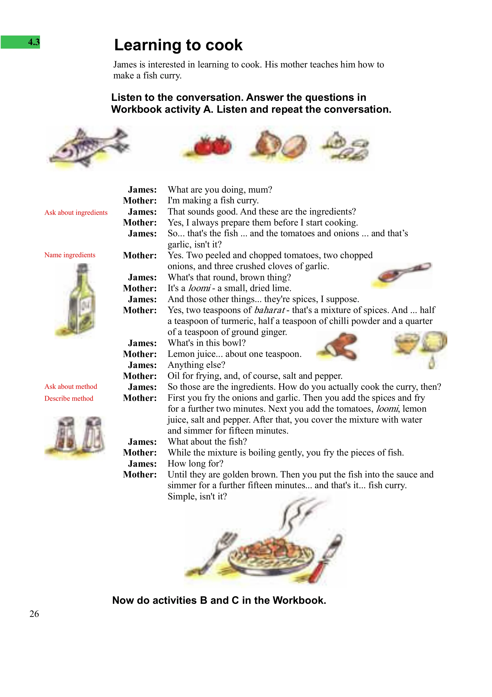

4.3 Learning to cook James is interested in learning to cook. His mother teaches him how to make a fish curry. Listen to the conversation. Answer the questions in Workbook activity A. Listen and repeat the conversation. James: What are you doing, mum? Mother: I'm making a fish curry. [Ask about ingredients] James: That sounds good. And these are the ingredients? Mother: Yes, I always prepare them before I start cooking. James: So... that's the fish ... and the tomatoes and onions ... and that's garlic, isn't it? [Name ingredients] Mother: Yes. Two peeled and chopped tomatoes, two chopped onions, and three crushed cloves of garlic. James: What's that round, brown thing? Mother: It's a loomi - a small, dried lime. James: And those other things... they're spices, I suppose. Mother: Yes, two teaspoons of baharat - that's a mixture of spices. And ... half a teaspoon of turmeric, half a teaspoon of chilli powder and a quarter of a teaspoon of ground ginger. James: What's in this bowl? Mother: Lemon juice... about one teaspoon. James: Anything else? Mother: Oil for frying, and, of course, salt and pepper. [Ask about method] James: So those are the ingredients. How do you actually cook the curry, then? [Describe method] Mother: First you fry the onions and garlic. Then you add the spices and fry for a further two minutes. Next you add the tomatoes, loomi, lemon juice, salt and pepper. After that, you cover the mixture with water and simmer for fifteen minutes. James: What about the fish? Mother: While the mixture is boiling gently, you fry the pieces of fish. James: How long for? Mother: Until they are golden brown. Then you put the fish into the sauce and simmer for a further fifteen minutes... and that's it... fish curry. Simple, isn't it? Now do activities B and C in the Workbook.
how to cook scrambled eggs..، وحُفظت حرفياً داخل نص التمرين.[
{
"num": 1,
"question": "1 What are ingredients?",
"model_answer": "The things (foods and spices) used to make a dish.",
"explain_ar": "المكوّنات والمقادير اللازمة لتحضير الطعام."
},
{
"num": 2,
"question": "2 When does James' mother prepare her ingredients?",
"model_answer": "Before she starts cooking.",
"explain_ar": "نصّاً: I always prepare them before I start cooking."
},
{
"num": 3,
"question": "3 What does she do to the tomatoes?",
"model_answer": "She peels and chops them (peeled and chopped tomatoes).",
"explain_ar": "تقشرها وتفرمها (Two peeled and chopped tomatoes)."
},
{
"num": 4,
"question": "4 What does she do to the cloves of garlic?",
"model_answer": "She crushes them (three crushed cloves of garlic).",
"explain_ar": "تهرسها/تدقها بالمدقة."
},
{
"num": 5,
"question": "5 How many spices does she use?",
"model_answer": "Four (baharat, turmeric, chilli powder and ground ginger).",
"explain_ar": "لاحظ أن baharat نفسه مزيج توابل، وإلى جانبه الكركم والفلفل الأحمر والزنجبيل المطحون."
},
{
"num": 6,
"question": "6 What does she fry the ingredients in?",
"model_answer": "Oil.",
"explain_ar": "قالت الأم: Oil for frying."
},
{
"num": 7,
"question": "7 Which ingredients go in first?",
"model_answer": "The onions and garlic.",
"explain_ar": "First you fry the onions and garlic."
},
{
"num": 8,
"question": "8 What goes in next?",
"model_answer": "The spices (fried for two minutes), and then ('Next') the tomatoes, loomi, lemon juice, salt and pepper.",
"explain_ar": "يلي البصل والثوم التوابل أولاً (Then you add the spices)، ثم تليها الطماطم واللومي وعصير الليمون والملح والفلفل (Next...)."
},
{
"num": 9,
"question": "9 The word 'simmer' means: a) fry [ ] b) boil gently [ ] c) grill. [ ]",
"model_answer": "b) boil gently",
"explain_ar": "تُستنتج مباشرة من قولها بعد ذلك: While the mixture is boiling gently..."
},
{
"num": 10,
"question": "10 For how long does she fry the pieces of fish?",
"model_answer": "Until they are golden brown.",
"explain_ar": "لم تذكر مدة بالدقائق بل معيار اللون: Until they are golden brown."
}
][
{
"num": 1,
"prompt": "1 heat (e.g., heat ice / heat food quickly): to ______",
"answers": [
"make hot"
]
},
{
"num": 2,
"prompt": "2 melt (When you heat ice, it melts and changes to water): ______",
"answers": [
"changes from solid to liquid"
]
},
{
"num": 3,
"prompt": "3 stir (stir it with a wooden spoon to stop it burning): ______",
"answers": [
"move/mix round with a spoon"
]
}
][
{
"label_ar": "1) الخطوات الثلاث الأولى (تسخين المقلاة وإضافة الزبدة والحليب)",
"placeholder": "First, heat a pan. Next, melt some butter in it and add some milk."
},
{
"label_ar": "2) إضافة البيض والطبخ والتحريك",
"placeholder": "Then break the eggs into the pan (3 for each person) and cook them for five or six minutes while stirring the eggs."
},
{
"label_ar": "3) الخطوة الأخيرة والتتبيل",
"placeholder": "Finally, add salt and pepper."
}
]{
"pb_text_vs_image": "طُوبقت أسطر حوار 4.3 وبطاقات الوظائف الجانبية الأربعة في PB ص 26 كاملةً مع صورة pb-28.png.",
"wb_ocr_vs_image": "قُورنت صفحة WB ص 43 مع tesseract.js eng: صُحّح تشوّه الخيارات ('afry', 'boilgently') إلى صيغتها الدقيقة عبر wb-044.png، وحُفظ تكرار النقطة آخر تعليمات C ('eggs..') حرفياً."
}